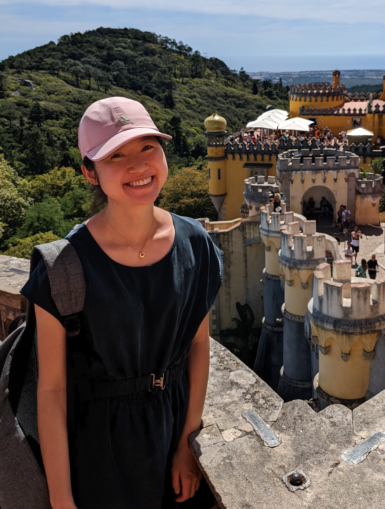

|
Yi-Chin Wu
| ycwu [at] umich [dot] edu | |
|
About
I am an engineering manager at Twitter leading an ML recommendations domain. We build embeddings for retrieval at various product surfaces and provide them as ranking features. Previously, I was an ML engineer at Pure Storage where we use ML to help customers project and simulate storage workloads. Before Pure Storage, I was a postdoctoral researcher at the TerraSwarm Research Center, where I utilized Discrete Event Control theory and formal method for policy synthesis to enforce privacy under certain utility constraints.
Publications
Y.-C. Wu and S. Lafortune, "Optimal Synthesis of Insertion Functions for Opacity Enforcement", Transactions on Automatic Control (To appear), 2016. [pdf]
Y.-C. Wu and S. Lafortune, "Synthesis of Insertion Functions for Enforcement of Opacity Security Properties", Automatica, 50(5):p.1336-1348, 2014. [pdf]
Y.-C. Wu and S. Lafortune, "Comparative Analysis of Related Notions of Opacity in Centralized and Coordinated Architectures", Journal of Discrete Event Dynamic Systems, 23(3): p.307-339, 2013. [pdf]
Y.-C. Wu, V. Raman, S. Lafortune, and S. A. Seshia, "Obfuscator Synthesis for Privacy and Utility", NASA Formal Methods Symposium, 2016.
L. K. Carvalho, Y.-C. Wu, R. Kwong, and S. Lafortune, "Detection and Prevention of Actuator Enablement Attacks in Supervisory Control Systems", Workshop on Discrete Event Systems, 2016.
Y.-C. Wu, G. Lederman, and S. Lafortune, "Enhancing Opacity for Stochastic Discrete Event Systems Using Insertion Functions", American Control Conference, 2016. [supplementary proof]
Y.-C. Wu and S. Lafortune, "Synthesis of Opacity-Enforcing Insertion Functions That Can Be Publicly Known", Conference on Decision and Control , 2015. [pdf]
Y.-C. Wu, K. A. Sankararaman, and S. Lafortune, "Ensuring Privacy in Location-Based Services: An Approach Based on Opacity Enforcement", Workshop of Discrete Event Systems, 2014. [pdf][slides]
Y.-C. Wu and S. Lafortune, "Enforcement of Opacity Properties Using Insertion Functions", Conference on Decision and Control, 2012. [pdf][slides]